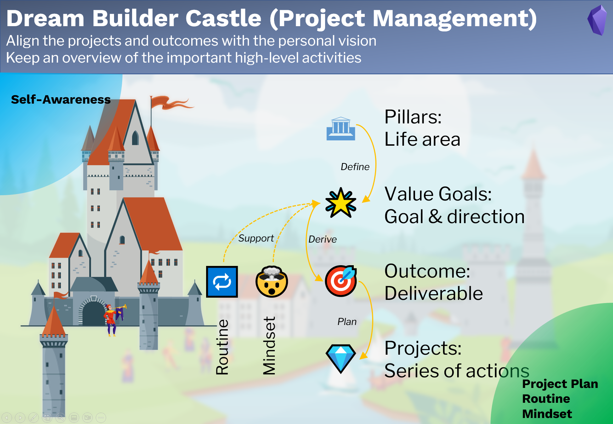

Goal Management
Purpose
The part Goal Management is designed to
- align the projects and outcomes with the personal vision,
- keep an overview of the important high-level activities.
Note types
This goal management uses 7 note types.
- 🏛Pillar: Important life area, e.g. finance, health, family.
- 🌟Value goal: Goal or vision in a life area (pillar), normally not concrete, not quantified, but a clear statement about our dreams. e.g. "I want to have a healthy lifestyle".
- 🎯Outcome: Quantified deliverable to achieve the value goal. They must be quantified, terminable and actionable. e.g. " Go swimming 10 times this year". Make sure, that the outcomes really serve to achieve the value goals.
- 💎Project: A series of actions to achieve a milestone in the outcome.
- Video project: Similar to the project, but optimized for creating videos.
- 🔁Routine: Repeated activities to achieve a certain value goal.
- 🤯Mindset: Mindsets required to achieve a certain value goal.
Workflow

- Define pillars and value goals based on the self-awareness
- Derive outcomes from value goals as a deliverable result
- Plan projects to achieve the outcomes
- Derive required routines and mindsets to support the value goals.
Input: Self-awareness.
Output: Projects plan, routine and mindset.
Pillar note
Yalm front matter
The pillar note has the following standard property in the yalm front matter.
---
fileClass: pillar
sorting-index: 100
category-pillar: 🟢live
status-set2: 🟢active
date: 2022-04-23
---
fileClass: Note type, always pillar
sorting-index: used to sort pillars in the dashboard's dataview table.
Please use the following convention to set the sorting index.
- 🟢live: 1xx
- 🟠love: 2xx
- 🔵learn: 3xx
- 🟡legacy: 4xx
category-pillar: Category of the pillar, possible categories [🟢live,🟠love,🔵learn,🟡legacy]
status-set2: Status of the note, possible status [🟢active,⏸on-hold,✨future,✅archived]
date: Creation date of the note, automatically created
Section value goals
A dataview code block is used for displaying all value goals, which belong to the current pillar.

Value goal note
Yalm front matter
The value goal note has the following standard property in the yalm front matter.
---
fileClass: value-goal
status: 🟢active
date: 2022-08-12
---
fileClass: Note type, always value-goal
status: Status of the note, possible status [🟢active,⏸on-hold,🔜next-up,✨future,✅completed,🗑️abandon]
date: Creation date of the note, automatically created
Section Inline Field
Pillar:: Parent pillar of the current value goal
Years:: Years, in which the current value goal is active
Section How
A dataview code block is used for displaying all outcomes, which belong to the current value goal. The tasks in the outcome notes are displayed as a progress bar.

Section Supporting
Two dataview code blocks are used for displaying all routines and mindsets, which support the current value goal.

Section Knowledge
A dataview code block is used for displaying all topic notes (knowledge), which supports the current value goal.
Outcome note
Yalm front matter
The outcome note has the following standard property in the yalm front matter.
---
fileClass: outcome
status: 🟢active
date: 2022-08-12
total: 6
completed: 2
---
fileClass: Note type, always outcome
status: Status of the note, possible status [🟢active,⏸on-hold,🔜next-up,✨future,✅completed,🗑️abandon]
date: Creation date of the note, automatically created
total: Total tasks in the note, automatically updated by the plugin MetaEdit
completed: Completed tasks in the note, automatically updated by the plugin MetaEdit
Section Inline Field
Value Goal:: Parent value goal of the current outcome
Quarters:: Quarters, in which the current outcome is active
Section How
A dataview code block is used for displaying all projects, which belong to the current outcome.
Project note
Yalm front matter
The outcome note has the following standard property in the yalm front matter.
---
fileClass: project
status: 🟢active
date: 2022-08-12
total: 1
completed: 0
---
fileClass: Note type, always project
status: Status of the note, possible status [🟢active,⏸on-hold,🔜next-up,✨future,✅completed,🗑️abandon]
date: Creation date of the note, automatically created
total: Total tasks in the note, automatically updated by the plugin MetaEdit
completed: Completed tasks in the note, automatically updated by the plugin MetaEdit
Section Inline Field
Outcome:: Parent outcome of the current project
Months:: Months, in which the current project is active
Video project note
Similar to a project note.
Routine note
Similar to the outcome note.
Mindset note
Similar to the outcome note.